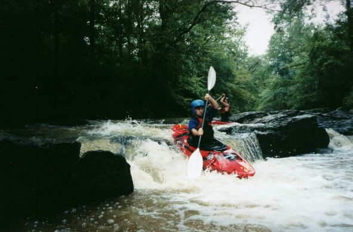
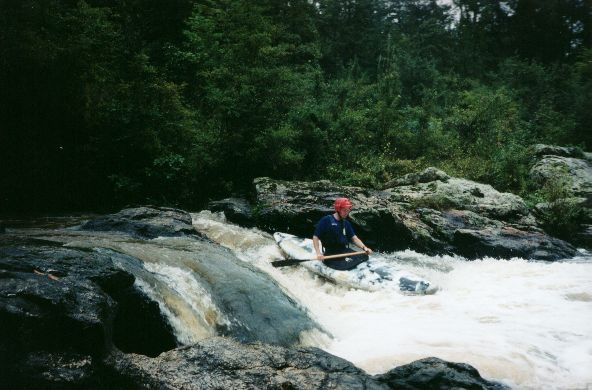
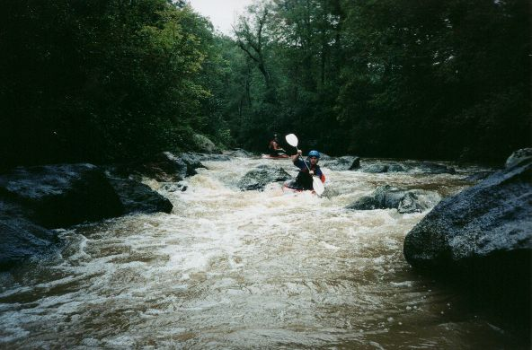
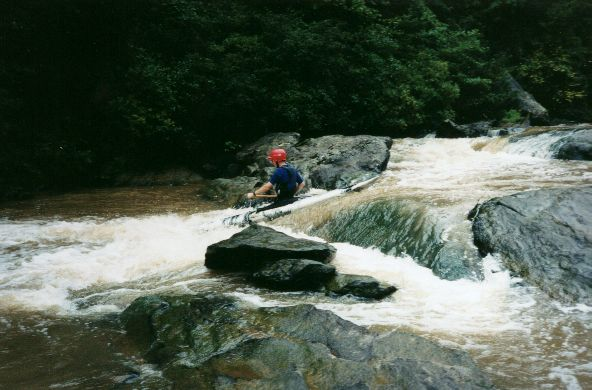

Walnut Creek

Jason Ory at 'the falls'.

Mark D' at what may be 'the mill falls'.

Neat, narrow, granite boulder garden. We could have used more
water.

The last drop of the best rapid towards the lake.